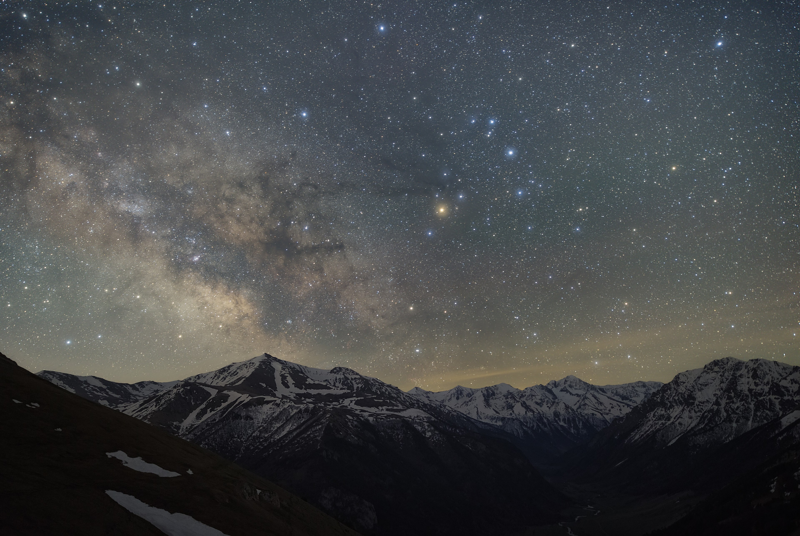

Горы · история · ущелья
Северная Осетия
Маршрут для тех, кто хочет увидеть драматичные ущелья, древние некрополи, монастыри и спокойную мощь осетинских гор.
5500 ₽ / человек- Кармадонское ущелье
- Даргавс «Город мертвых»
- Куртатинское ущелье
- Кадаргаванская теснина
- Верхний Фиагдон
- Аланский монастырь
- Арт-объекты